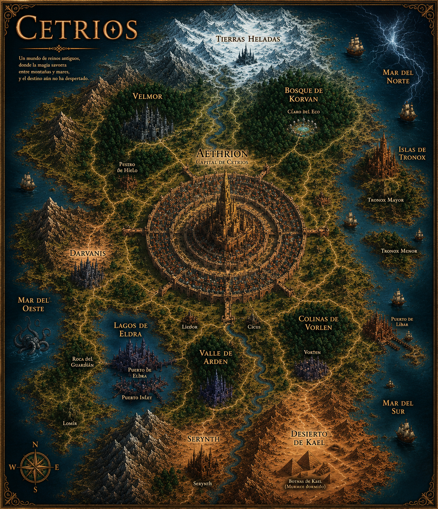

CETRIOS
Abriendo los caminos de Cetrios...
Mapa del Mundo
CETRIOS
Un mundo de reinos antiguos, donde los Ecos despiertan entre montañas y mares.
Tocá un punto para viajar

← Volver al mapa
Explorar este lugar
+
−
⌂
?
♪
LEYENDA
Capital
Ciudad / Reino
Región / Bosque
Zona peligrosa